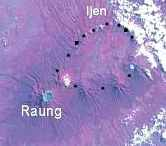

"Fasten seat belt" sagt die Stewardeß, die Dakota setzt auf, ich purzle aus meinen Träumen auf die Erde. Wir sind in Bali.
Hier irrt die Ko-Autorin, aber es klingt hübsch, wenn der Gunung Agung brodelt. Wie man aus jeder Anflugkarte von Surabaya nach Bali sehen kann, geht der Flug nie über den Gunung Agung, sondern nur über javanische Vulkane. Sie ist aber später einige Male auf dem Weg nach Ambon und nach Sulawesi über den Gunung Agung geflogen, und mit über 60 sogar einmal draufgestiegen.
Auch flog die "Dakota", Spitzname für die DC3 nur Inner-Kalimantan Kurzstrecken; nach Surabaya gab es damals schon die schicken Convairs.
Die Flugzeug flogen damal nur etwa in einer Höher von 3000 m, also nur 1000 m über den Bergenspitzen, und das Brodeln und beängstigende Gewackel beim Überfliegen zweier Vulkane kann ich mich auch noch erinnern: es waren der Raung und der "kleine" Merapi, die östlichsten Vulkane von Java (Karte des Ijen)
Spaceshuttle-Aufnahme vom Ijen in Ostjava. Von mir mit schwarzen Punkten markiert sieht man den äußeren Ring der Caldera, in der viele Dörfer liegen und heiße Quelle sprudeln. Im Süden ragen aus dem Rand der Caldera einzelne Vulkankegel hervor.Nachdem 1982 zwei Boieng 747 beim Ausbruch des Galunggung nur knapp dem Absturz entkamen, bestehen heute strengere Vorschriften beim Überfliegen von Vulkanen in Indonesien.